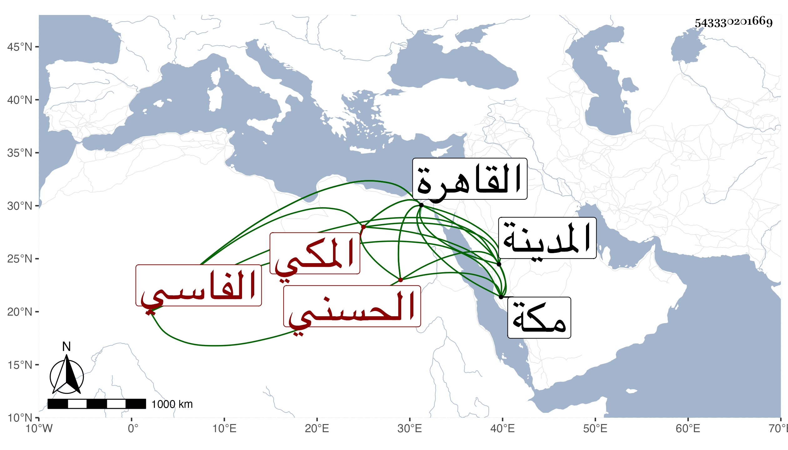

0902Sakhawi.DawLamic.ITO20230111-ara1.EIS1600.543330201669
Biography ID: 543330201669
29
محمد أبو السرور الحسني الفاسي المكي أخو الثلاثة قبله ووالد عبد الرحمن وأبي الخير . سمع الثلاثة على الفوى من لفظ الكلوتاتي في الدارقطني مات وإبناه في الطاعون بالقاهرة في جمادى الأولى سنة ثلاث وثلاثين ، أرخهم ابن فهد وهو أيضا والد عبد اللطيف . وكان مولد أبي السرور في صفر سنة ثمان وسبعين وسبعمائة بمكة وسمع بها من العفيف النشاوري والجمال الأميوطي صحيح مسلم بفوت يسير ومن الثاني فقط الترمذي وبعض السيرة لابن سيد الناس وغيرهما ومن أولهما الأربعين المختارة لابن مسدي وأشياء وكذا سمع على ابن صديق البخاري ومسند عبد وبالمدينة من العلم سليمان السقا نسخة أبي مسهر ، وأجاز له إبراهيم بن علي ابن فرحون وابن خلدون وابن عرفة والعراقي والهيثمي وابن حاتم والمحب الصامت وخلق وتفقه بأبيه وجلس بعد موت أخيه أبي حامد للتدريس ، ودخل القاهرة غير مرة فقدرت وفاته بها كما تقدم . وكان خيرا ساكنا منجمعا عن الناس .
